Catherine I. Anna Whistler, in discussing Imperial residences in Tsarskoe Selo and Peterhof, frequently confused changes made by Catherine I, wife of Peter I (the Great), and by Catherine II (the Great).
Anna Whistler mentioned that the daughters of Peter the Great made elaborate changes to the simple residences their father had built in the environs of St. Petersburg. It was Empress Elizaveta who is known to have done so.
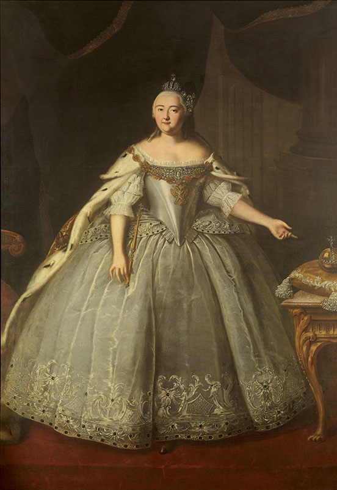
Ivan Vishnyakov (1699–1761). Portrait of Empress Elizaveta Petrovna. 1743. Oil on canvas. 254.5 x 179.8 cm (100.1 x 70.7 in). State Tret’iakov Gallery, Moscow. [full resolution image]
Image 414
Catherine II (the Great) is mentioned by Anna Whistler in connection with her changes to some of the Imperial residences in the environs of St. Petersburg.
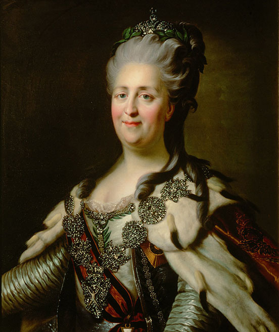
Portrait of Catherine II.Late 1700s. Oil on canvas; after Dmitri Grigorievich Levitskii (1735–1822). Depository of the Tsarskoe Selo Palace–Museums. (Bardowskaja and Chodassewitch, Deutsche Prinzessinnen, p. 5) [full resolution image]
Images 415, 416
Anna Whistler mentioned the deceased Empress Maria Fyodorovna, mother of Nicholas I, when writing of the death of Grand Duchess Aleksandra Nikolaevna in 1844.
Anna Whistler mentioned the death (1826) of Empress Elizaveta Alekseevna, wife of Alexander I, in citing Imperial deaths.
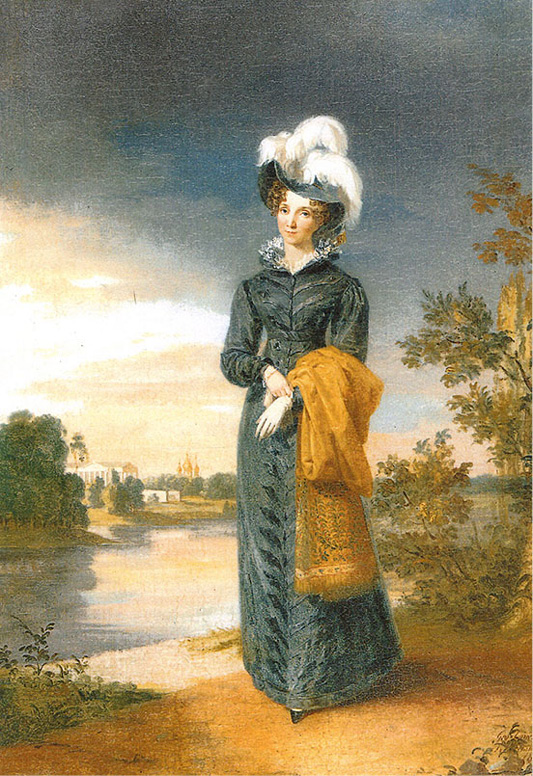
George Dawe (1781–1829). Portrait of Empress Elizaveta Alekseevna. 1828. Oil on canvas. 86.5 x 60.4 cm. State Museum Preserve of Peterhof. [full resolution image]
Image 420
The Tsarskoe Selo Carousel, painted by Horace Vernet in 1843: (left to right) Aleksandr Nikolaevich, Crown Prince; Maksimilian Leuchtenberg, husband of Maria Nikolaevna, eldest daughter of Nicholas I and Empress Aleksandra Fyodorovna; Emperor Nikolai I; Empress Aleksandra Fyodorovna; Olga Nikolaevna, their second daughter; Aleksandra Nikolaevna, their third daughter; Konstantin Nikolaevich, their second son. In the foreground on foot: Nikolai Nikolaevich, their third son, and Mikhail Nikolaevich, their fourth son. Only Maria Nikolaevna, their eldest daughter, is not in the portrait.
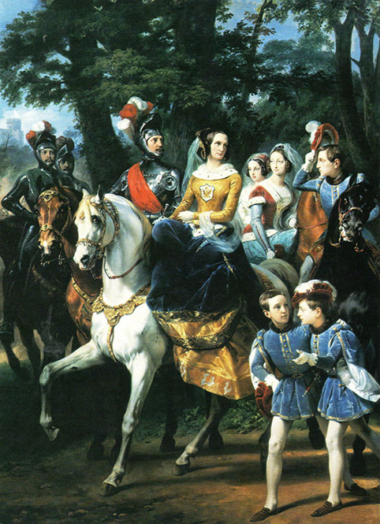
Horace Vernet (1789–1863). The Tsarskoe Selo Carousel. 1843. Oil on canvas. 248 x 340 cm. Depository of the Tsarskoe Selo Palace–Museums. [full resolution image]
Image 421
Nicholas I, Emperor of Russia, about the time the Whistlers lived there, who gratefully appreciated the talent and moral rectitude of Major Whistler
Nicholas I is wearing the parade uniform of the Cavalier Guard (Imperial Household) Regiment, the head of which was his wife, Empress Aleksandra Fyodorovna. In English, the Cavalier Guard is called the Horse Guard.
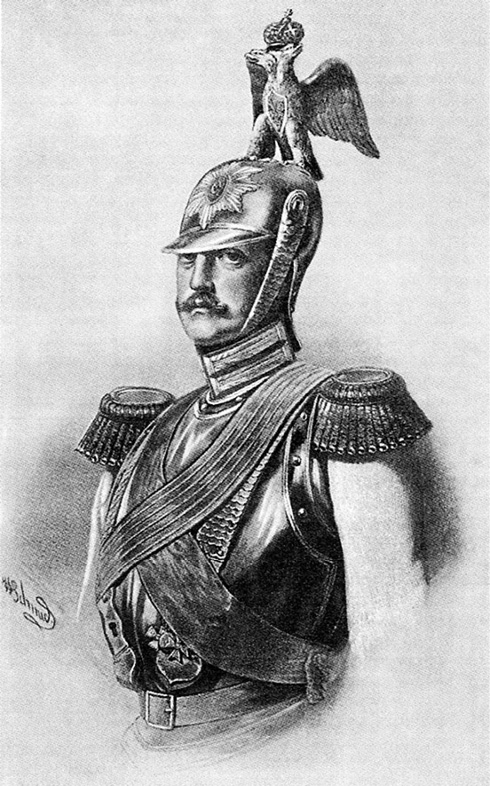
A.V. Shmidt. Nicholas I in the Parade Uniform of the Cavalier (Imperial Household) Guard Regiment. 1830s. Institute of Russian Literature of the Academy of Sciences (Pushkin House), St. Petersburg. [full resolution image]
Image 424
Empress Aleksandra Fyodorovna, wife of Nicholas I.
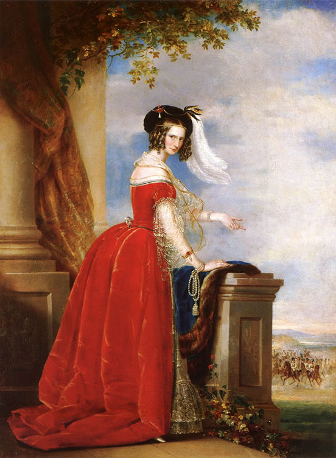
Christina Robertson (1796–1854). Portrait of Empress Aleksandra Fyodorovna. c. 1845. Oil on canvas. 84 x 65 cm. Pushkin State Museum of Fine Arts, Moscow. [full resolution image]
Image 425
Grand Duke Aleksandr Nikolaevich (future Alexander II), about 30 years old (c. 1848)
Daguerrotype of Her Imperial Majesty, Maria Aleksandrovna, wife of Emperor Alexander II
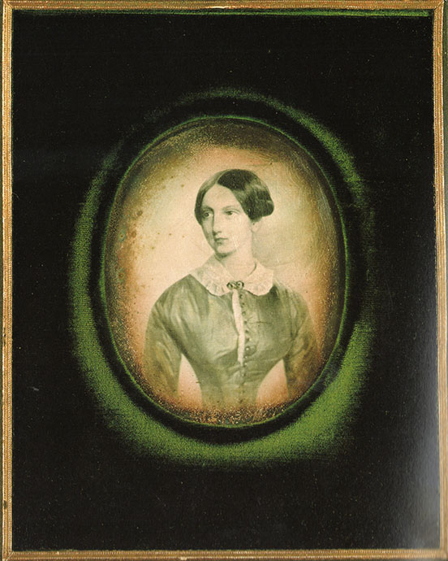
Charles Bergamasco (1830–1896). Grand Duchess Maria Aleksandrovna. 1860–1870. Daguerrotype. (Das Russland der Zaren: Photographien von 1839 bis zur Oktoberrevolution [The Russia of the Tsars: Photographs from 1839 to the October Revolution] [Berlin: Nishen, 1989], p. 106) [full resolution image]
Image 428
Grand Dukes Aleksandr Aleksandrovich, Vladimir Aleksandrovich, and Nikolai Aleksandrovich, sons of Grand Duke Aleksandr Nikolaevich and grandsons of Nicholas I. Nikolai Aleksandrovich was Crown Prince but predeceased his father, thus making Aleksandr Aleksandrovich Crown Prince, the future Aleksander III. Anna Whistler saw Grand Duke Nikolai Aleksandrovich at a review in May 1847, when he was about four years old.
Grand Duke Nikolai Aleksandrovich wearing a scarlet shirt. Emma Maingay informed Anna Whistler that only the Imperial children wore such scarlet shirts.
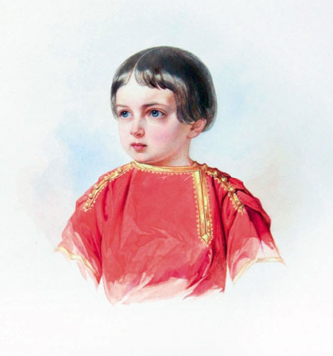
Vladimir Ivanovich (Woldemar) Hau (1816–1895). Portrait of Tsarevich Nicholas Alexandrovich of Russia. c. 1847. Watercolor heightened with white over pencil on paper. 27 by 21.5cm (10¾ by 8½ in.). Institute of Russian Literature of the Academy of Sciences (Pushkin House), St. Petersburg. [full resolution image]
Image 430
Her Imperial Highness Grand Duchess Maria Nikolaevna, eldest daughter of Nicholas I
His Imperial Highness Maximilian, Duke of Leuchtenberg, husband of Her Imperial Highness Grand Duchess Maria Nikolaevna, eldest daughter of Nicholas I
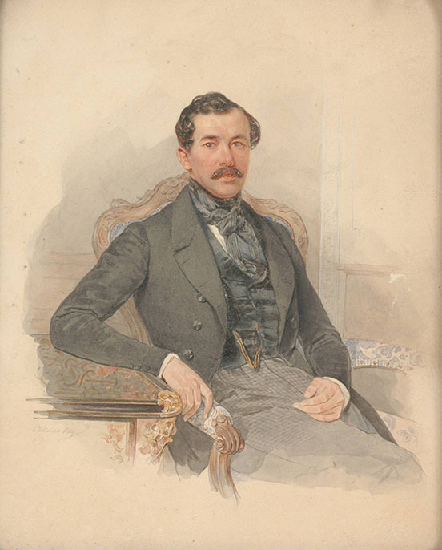
Petr Fedorovich Sokolov (1787–1848). Maximilian, Duke of Leuchtenberg. c. 1847. Watercolor over pencil anad pen and black ink, heightened with gum arabic. 25 x 21 cm (9 4/5 x 8 1/4 in.). Auctioned at Bonham’s, London, 8 June 2009. [full resolution image]
Image 432
Her Imperial Highness Grand Duchess Olga Nikolaevna, second daughter of Nicholas I, whose outdoor wedding festivities the Whistlers attended in 1846 at Peterhof
Crown Prince Karl of Württemberg, husband of Grand Duchess Olga Nikolaevna, second daughter of Nicholas I
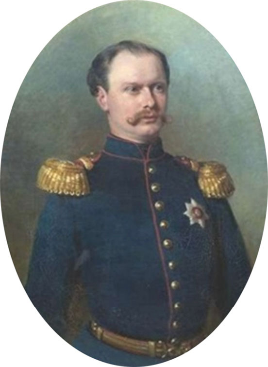
Franz Xaver Winterhalter (1805–1873). Portrait of Prince Karl von Württemberg in Uniform. 1856. Oil on canvas. 92 x 69.5 cm. (36.2 x 27.4 in.). Private collection. [full resolution image]
Image 434
Her Imperial Highness Grand Duchess Aleksandra Nikolaevna, the youngest daughter of Nicholas I, who died in August 1844
Her Imperial Highness Grand Duchess Aleksandra Iosifovna, wife of His Imperial Highness Grand Duke Konstantin Nikolaevich
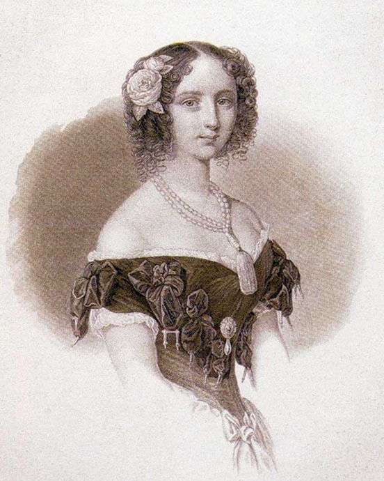
Her Imperial Highness the Grand Duchess Alexandra Iosifovna. (Kalendar’ na 1850 god. S portretom Eë Imperatorskogo Vysochestva Gosdaryni Velikoi Kniagini Aleksandry Iosifovny [Calendar for 1850, with a Portrait of Her Imperial Highness Grand Duchess Aleksandra Iosifovna] [St. Petersburg: Imperatorskaia Akademiia Nauk, 1849], p. 1) [full resolution image]
Image 438
Anna Whistler attended the betrothal ceremony of His Imperial Highness Grand Duke Konstantin Nikolaevich and Her Imperial Highness Grand Duchess Aleksandra Iosifovna in 1847.
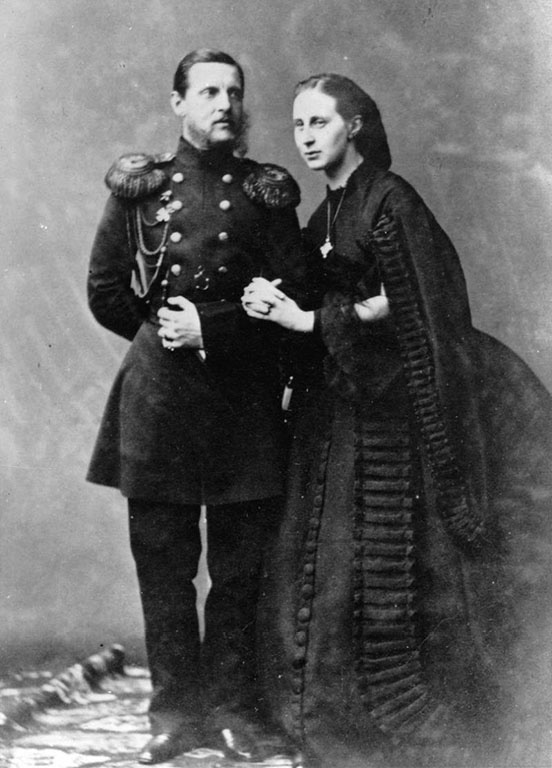
Grand Duke Konstantin Nikolaevich and Grand Duchess Aleksandra Iosifovna. 1857–1861. Photograph. Russian State Film and Photo Archive, Krasnogorsk. [full resolution image]
Image 439
His Imperial Highness Grand Duke Mikhail Pavlovich, brother of Nicholas I
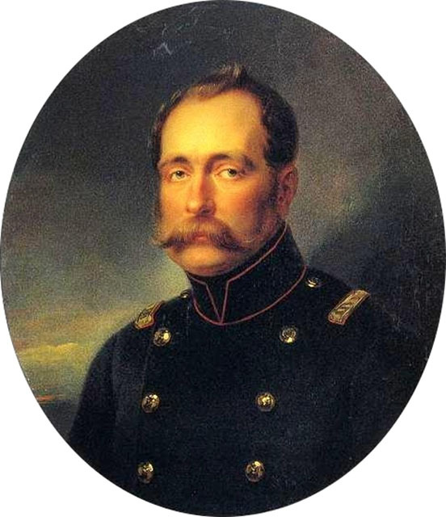
Ivan Nikolaevich Kramskoi (1837–1887). Grand Duke Mikhail Pavlovich. 1845. Oil on canvas. State Russian Museum, St. Petersburg. [full resolution image]
Image 440
Her Imperial Highness Grand Duchess Elena Pavlovna, the wife of His Imperial Highness Grand Duke Mikhail Pavlovich, brother of Nicholas I
Karl Briullov (1799–1852). Portrait of Grand Duchess Yelena Pavlovna with Her Daughter. 1830. Oil on canvas. 265 x 185 cm. State Russian Museum, St. Petersburg. [full resolution image]
Image 441
Her Imperial Highness Grand Duchess Elizaveta Mikhailovna was the daughter of Grand Duke Mikhail Pavlovich, brother of Nicholas I, and Grand Duchess Elena Pavlovna. She was married in January 1844, about the same time as her cousin, Grand Duchess Aleksandra Nikolaevna, and died in 1845 in childbirth.
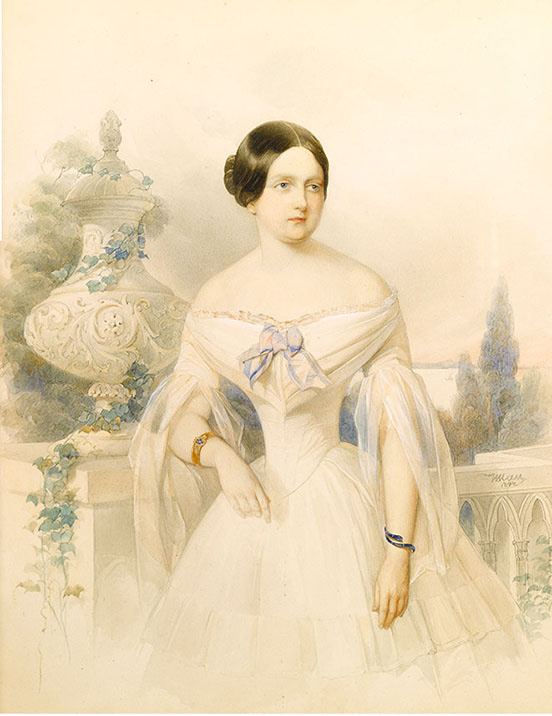
Vladimir Ivanovich (Woldemar) Hau (1816–1895). Portrait of Grand Duchess Elizaveta Mikhailovna. 1844. Watercolor on paper. 28 x 22 cm. Signed and dated “W. Hau 1844.” Private collection; sold at auction by Ruzhnikov, UK. [full resolution image]
Image 442
His Serene Highness Duke Adolphe Wilhelm of Nassau, Grand Duke of Luxemburg, who married Her Imperial Highness Grand Duchess Elizaveta Mikhailovna, niece of Nicholas I, in January 1844
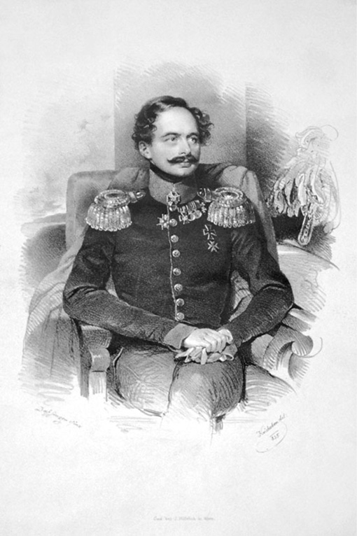
Josef Kriehuber (1800–1876). Portrait of Adolphe, Grand Duke of Luxembourg. 1835. Lithograph. 34.9 x 47 cm. Österreichische Nationalbibliothek, Vienna. [full resolution image]
Image 443
Prince Grigorii Grigorievich Orlov, lover of Catherine the Great and grandfather of Count Aleksei Alekseevich Bobrinskii, in whose mansion the Whistlers lived as a family from September 1843 to May 1844
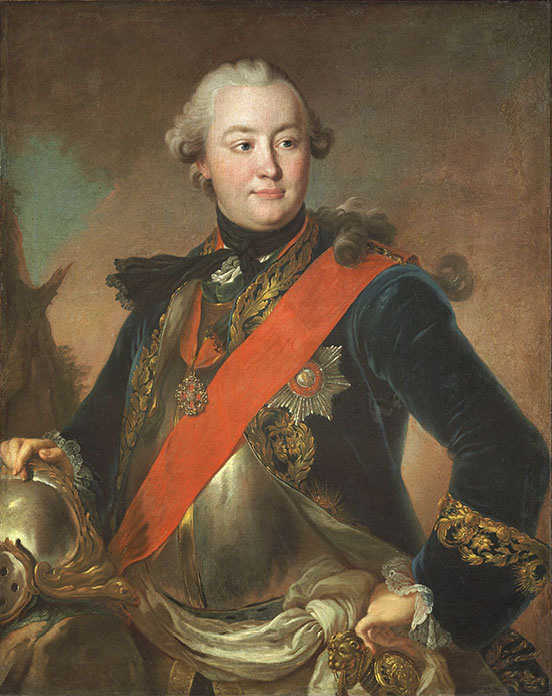
Fyodor Rokotov (1735–1808). Portrait of Grigory Orlov (1734-1783). c. 1763. Oil on canvas. 38.1 x 29.8 in. (96.9 x 75.8 cm). State Tret’iakov Gallery, Moscow. [full resolution image]